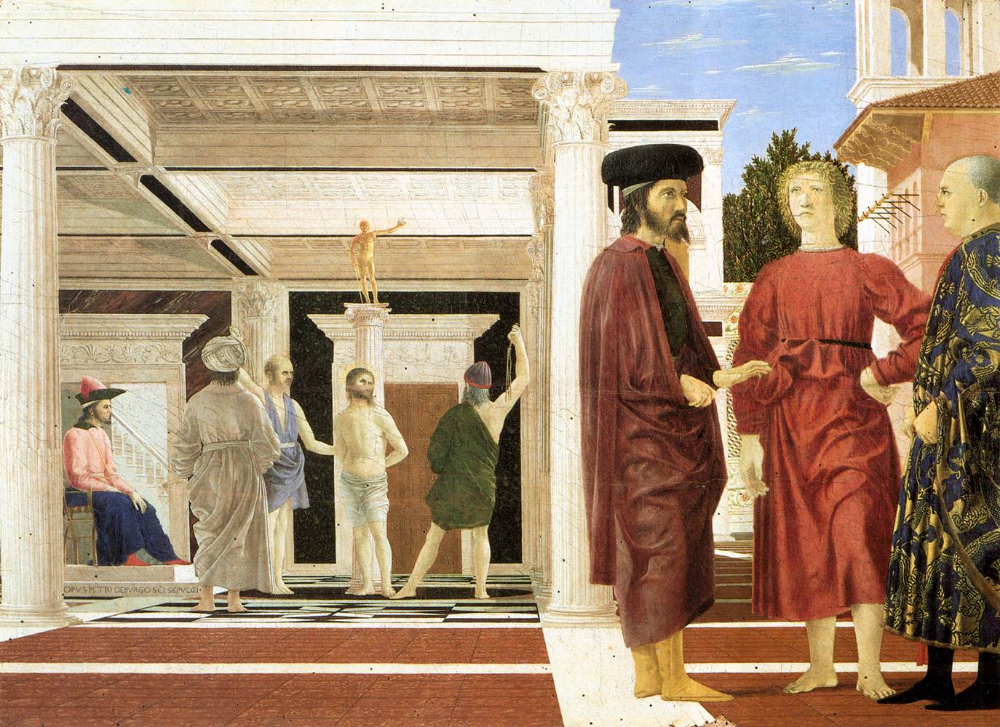

La Flagellation — Du roi des Juifs à l’Ecce Homo

Un roi devant le pouvoir romain
Jésus est arrêté et conduit devant Ponce Pilate, gouverneur romain de Judée. Ses accusateurs lui reprochent notamment de se présenter comme le « roi des Juifs ». Dans une province soumise à Rome, cette prétention peut être perçue comme une menace politique.
Pilate l’interroge sur sa royauté. Dans l’Évangile selon Jean, leur échange prend une dimension philosophique lorsque le gouverneur demande : « Qu’est-ce que la vérité ? » (Jean 18, 38).
Quatre Évangiles, quatre récits
Les quatre Évangiles relatent la comparution de Jésus devant Pilate, mais avec des nuances importantes.
Matthieu et Marc situent la flagellation après la décision de livrer Jésus à la crucifixion. Luc rapporte que Pilate propose de faire châtier Jésus puis de le relâcher, sans décrire explicitement une flagellation accomplie. Jean, au contraire, place la flagellation avant la condamnation définitive, alors que Pilate cherche encore à obtenir la libération de Jésus.
« Voici l’homme » — Ecce Homo
Après la flagellation, dans le récit de Jean, les soldats coiffent Jésus d’une couronne d’épines et le revêtent d’un manteau de pourpre. Ils tournent ainsi en dérision sa prétendue royauté.
Pilate présente alors Jésus à la foule : « Voici l’homme. » (Jean 19, 5)
Ces mots, traduits en latin par Ecce Homo, donneront leur nom à un grand thème de la peinture chrétienne : le Christ humilié, exposé au regard des hommes.
L’énigme de Piero : qui sont ces trois hommes ?**
Piero choisit de représenter la flagellation, mais relègue le Christ à l’arrière-plan. Au premier plan, trois hommes semblent converser, indifférents au supplice.
Leur identité demeure mystérieuse. Plusieurs hypothèses ont été avancées.
Une lecture religieuse. Les personnages pourraient renvoyer à des figures de la Passion, voire à différentes responsabilités dans la condamnation du Christ.
Une lecture politique. Certains chercheurs voient dans l’œuvre une allusion à la chute de Constantinople en 1453 et aux divisions de la chrétienté. Le supplice du Christ deviendrait alors le symbole d’une souffrance collective.
Une lecture liée à Urbino. Le jeune homme au centre a parfois été identifié à Oddantonio da Montefeltro, assassiné en 1444. Le tableau pourrait évoquer un drame politique contemporain du peintre.
Aucune de ces interprétations ne fait consensus.
Les Évangiles racontent ce qui arrive au Christ. Piero, lui, nous laisse une question : que se joue-t-il réellement sous nos yeux ?
Sources bibliques : Matthieu 27, 11–31 ; Marc 15, 1–20 ; Luc 23, 1–25 ; Jean 18, 28 – 19, 16. Citation de Jean 19, 1